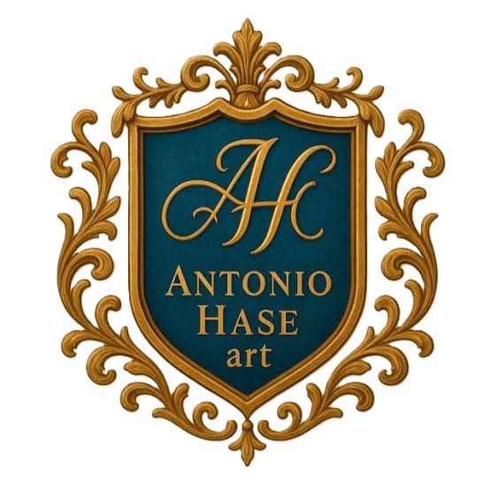
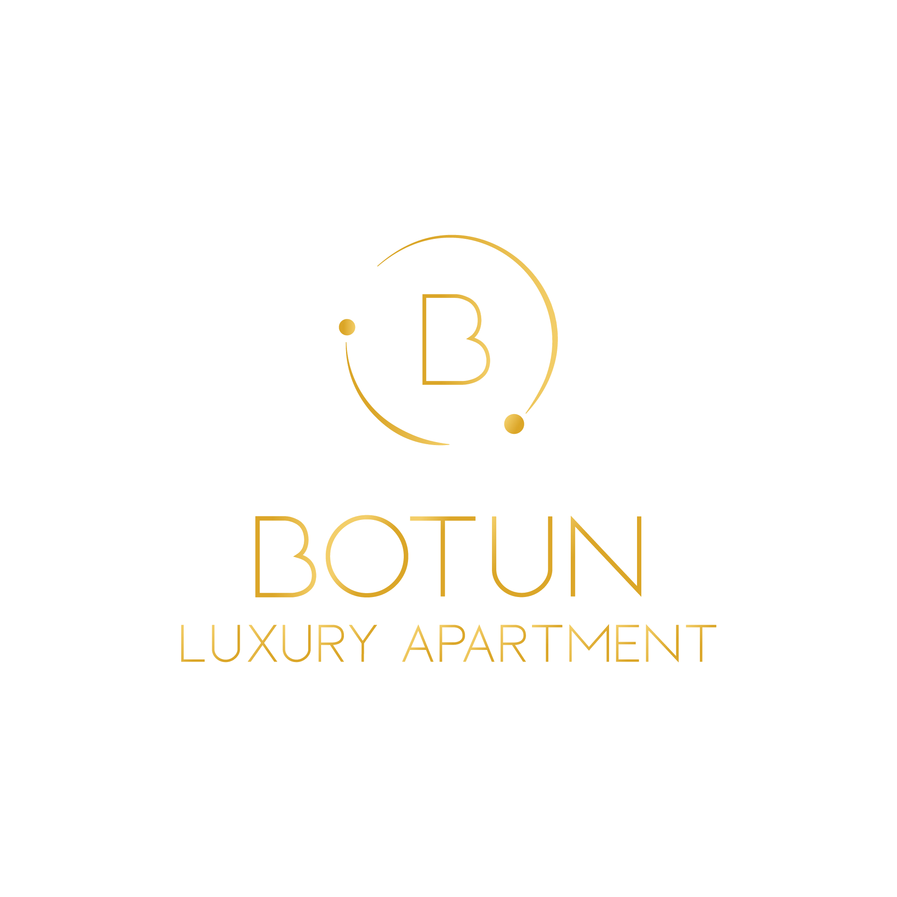
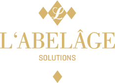
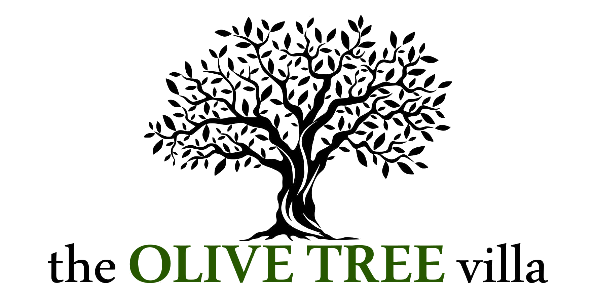
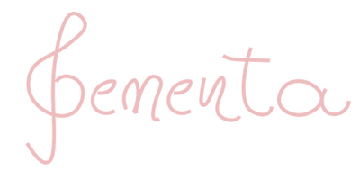

Strategic Marketing
SNP Group
Strategic Marketing · Design
Labsense
Strategic Marketing · Design
Medestetica
Strategic Marketing
Poliklinika Grgić

Strategic · Digital · Design
Antonio Hase Art

Digital · Design
Botun Luxury Apartment

Digital · Design
Fitstop

Digital · PR · Design
Labelage

Digital · Design
The Olive Tree Villa

Digital · Design
Sementa
PR and Communications
Majestic Gold
PR and Communications
Billich

PR and Communications
DLM Studio
Design and Branding
Katarina Mamić Design
BORIS HNATJUK
Digital Content and Social
Boris Hnatjuk